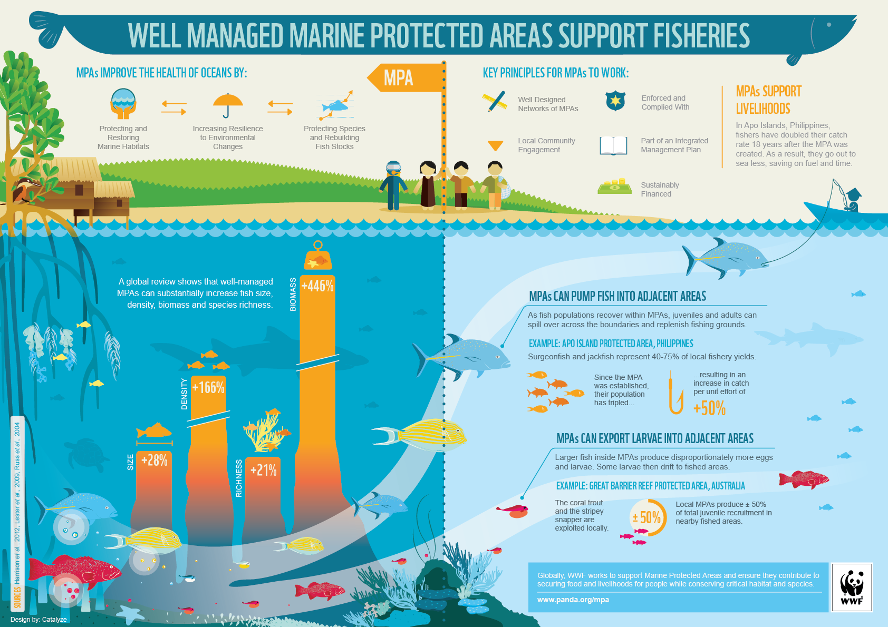
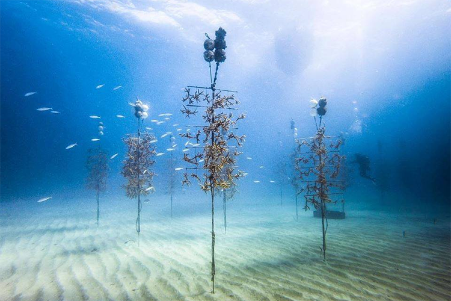
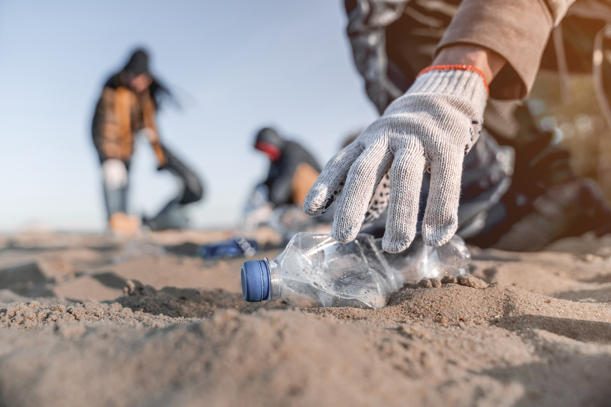
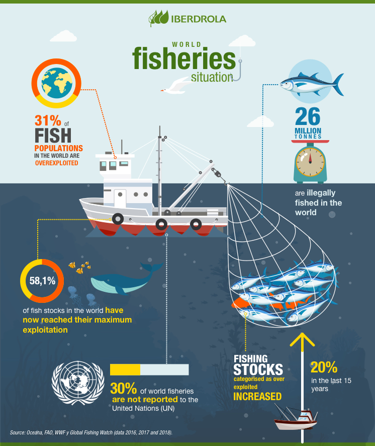
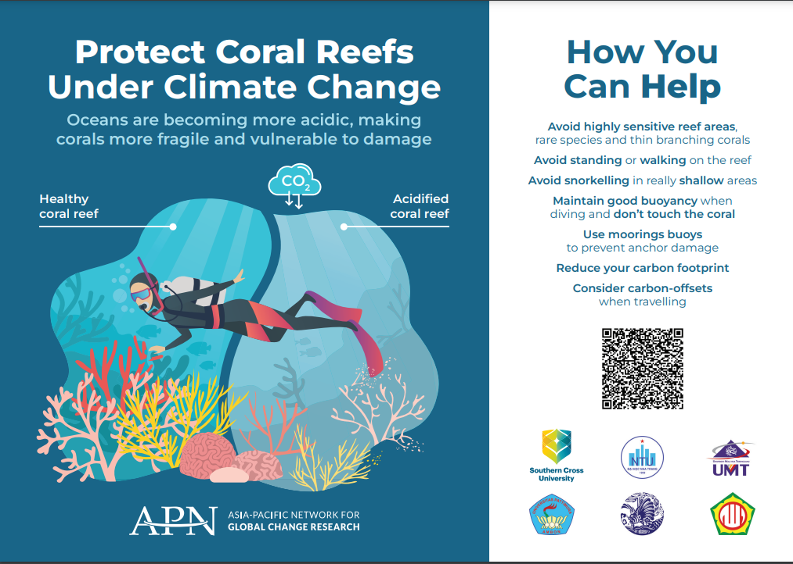

Conservation Efforts

To protect coral reefs, various conservation efforts are being implemented:
- Establishing Marine Protected Areas (MPAs) to limit harmful human activities.
- Restoring coral reefs through coral nurseries and transplantation projects.
- Reducing pollution and improving water quality.
- Promoting sustainable fishing practices.
- Global efforts to mitigate climate change.
1. Establishing Marine Protected Areas (MPAs)
Credit: World Wildlife Fund
Marine Protected Areas (MPAs) are designated sections of the ocean where governments limit human activities to protect marine environments. These areas often allow for non-destructive activities, such as recreational fishing, while restricting harmful practices like overfishing and pollution. As of 2023, there are over 5,000 MPAs worldwide, covering more than 8% of the ocean.
MPAs address various threats to marine ecosystems, including overfishing, pollution, and climate change, which have led to declines in fish and marine mammal populations.
Levels of Protection:
- No-entry MPAs: Complete prohibition of human access, often for research.
- No-take MPAs: Fishing and collecting are banned, but recreational activities are allowed.
- Multiple-use MPAs: Allow for regulated fishing and other activities, often divided into zones with different rules.
MPAs are created by national, state, local, and tribal governments, sometimes in cooperation across borders. Significant MPAs include:
- Phoenix Islands Protected Area: The world's largest MPA, covering 410,500 square kilometers.
- Echo Bay Marine Provincial Park: The smallest MPA, at just 0.4 hectares.
MPAs serve as essential tools for conservation, supporting biodiversity and sustainable use of ocean resources.
For more information, visit National Geographic: Importance of Marine Protected Areas.
2. Restoring Coral Reefs
Credit: Coral Restoration Foundation
Coral reefs provide habitat for marine life and contribute significantly to the economy, but they face threats from climate change, pollution, and physical damage. NOAA leads efforts in coral research and restoration, emphasizing strategies to improve habitat quality, prevent coral loss, enhance resilience, and improve coral health.
Coral nurseries and transplantation projects are crucial for restoring damaged reefs. Successful case studies include:
- Florida: The Mission: Iconic Reefs project aims to restore coral cover significantly across seven reef sites.
- Puerto Rico: Following hurricanes, NOAA has reattached over 10,000 broken corals with over 90% survival rates in restored areas.
- Hawaii: Innovative methods using native sea urchins to control invasive algae have helped restore urban reefs.
For more information, visit NOAA Fisheries - Restoring Coral Reefs.
3. Reducing Pollution
Credit: Aquaread blog
Pollution from land-based sources poses a significant threat to coral reefs. Key actions to combat sea pollution include:
- Reduce Plastic Production & Waste: Minimize plastic use and advocate for government legislation.
- Improve Wastewater Systems: Upgrade outdated infrastructure to prevent untreated sewage contamination.
- Use Eco-Friendly Products: Opt for reusable items and natural cleaning products.
- Reduce Chemical Pollution: Regulate harmful chemicals in agriculture.
- Manage Oil Spills: Implement better safety standards and regulatory measures.
- Beach & River Cleanups: Participate in community cleanup efforts.
- Monitoring & Measuring Progress: Advocate for ongoing water quality monitoring.
For more information, visit the Aquaread blog.
4. Promoting Sustainable Fishing Practices
Credit: Iberdrola
Sustainable fishing practices are essential for protecting coral reef ecosystems and marine biodiversity. According to the FAO, over 3 billion people depend on the ocean for their livelihoods, and overfishing significantly impacts these communities.
Efforts to promote sustainable fishing include regulating fish catches, protecting spawning areas, and combating illegal fishing.
For further information, visit the Food and Agriculture Organization (FAO).
5. Global Efforts to Mitigate Climate Change
Credit: World Bank
Climate change is a major threat to coral reefs, leading to coral bleaching and ecosystem loss. Global efforts to combat climate change involve:
- Reducing Carbon Emissions: Transitioning to renewable energy sources and implementing energy efficiency measures.
- Advocating for Policy Change: Supporting international agreements like the Paris Agreement.
- Raising Awareness: Educating communities about climate change and its effects on marine ecosystems.
- Enhancing Resilience: Investing in research to develop resilient coral species and restoration techniques.
To learn more, visit the World Bank - Climate Change.